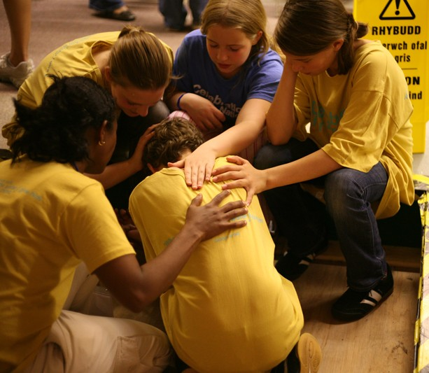

런던 기도의 집 소식
지난 3주간 두 번의 특별한 시간을 가졌습니다. 올해 열두 번째를 맞이하는 런던에서의 이스라엘 컨퍼런스와 독일 헤른후트(Herrnhut)에서의 72시간 예배입니다.
런던 이스라엘 컨퍼런스

이스라엘은 여러 해 동안 전쟁을 이어오며 나라들의 지탄을 받고 있지만, 런던에서는 3일간 이스라엘 컨퍼런스를 가졌습니다. "땅/나라의 회복, 백성의 회복/귀환, 영혼의 회복/구원"이라는 주제인데, 그것을 놀랍게 성취하시는 하나님의 신실하심을 경험하는 시간이었습니다.
둘째 날은 강사인 김종철 감독(브래드/Brad TV) 내외분을 모시고 런던 시내를 안내하였고, 서로 대화를 이어가는 동안 몇 가지를 돌아보게 되었습니다.
하나는, 이스라엘을 여러 차례 방문하며 연합하여 예배하는 일들을 해왔지만, 런던의 골더스 그린(Golders Green) 지역을 중심으로 거주하는 5만 명이 넘는 유대인들을 위한 기도에는 성실하지 못했다는 것,
다른 하나는, 한국인을 위한 단 하나의 이스라엘 전문 방송인 브래드/Brad TV를 통해 여러 해 유익을 얻어왔지만 중보로 나아가지는 못한 것입니다.
그리고, 런던에서 유대인 사역을 귀하게 감당해온 박계원 선교사님이 이번 컨퍼런스 준비를 끝으로 귀국하게 되어, 그 공백 역시 제게는 주께서 안겨주시는 영적 부담으로 다가왔습니다.
독일 헤른후트 72시간 예배

100년간의 24시간 기도운동을 이끌며 기독교 부흥과 선교운동에 헌신한 모라비안 공동체의 지도자
지난 한 주간은 독일 헤른후트에서의 72시간 예배에 참여하였습니다. 그 예배의 소중한 의미를 알기에 '필요한 일이 무엇이든' 감당해보려 했고, 한 주간의 자막 준비에 이어 현장에서는 음향 시스템, 무대 준비, 그리고 예배로 섬기며 참여하였습니다.
12-18시간을 프랑스와 네덜란드에서 자가용으로 운전하여 온 이들, 한국에서는 경유 시간까지 서른 시간을 이동하기도 했습니다. 예배에 사용할 크고 작은 악기와 깃발, 함께 나눌 음식들까지 꼼꼼히 챙겨온 모습들, 누군가 요청하지 않았어도 '할 수 있는 일이 무엇이든' 아낌없이 감당하려는 모습은 '이들에게 주님이 어떤 분이신지', '부르신 곳에서 그 분을 높이는 것의 의미가 무엇인지'를 선명하게 보여주는 듯했습니다.
마치, 마리아가 옥합을 깨어 향유를 예수께 부어드린 모습에 제자들은 경악을 금치 못했지만, 그녀가 가진 모든 것을 내어드린들 주님께는 조금도 아까운 것이 아니었던 것처럼, 90명이 함께 어우러진 예배의 현장은 '헌신과 희생, 순종'이라는 단어는 감추어지고 주님의 기뻐하심과 예배의 즐거움으로만 가득해 보였습니다.
영국 웨일즈 열방부흥축제


오는 7월 29일부터 7일간은 영국 웨일즈에서 열방부흥축제가 열립니다. 한국에서도 130명에 이르는 예배자들이 참여하고, 열방 곳곳의 예배자들이 부흥의 땅 웨일즈에 모여 온 마음으로 주님을 예배하는 시간입니다.
이제 스무 번째가 되었는데, 부흥은 우리의 노력이 아니라 주님께로부터 임을 알기에, 부흥을 위해 예배를 수단으로 삼지 않고 순전한 예배로 주님을 높이고자 하는 이들이 모이게 됩니다. 그리고, 이곳으로 향하는 예배자들을 곧 맞이하게 되는데,
월드컵의 열기가 너무 뜨거워 승패의 감정으로 소요가 일어나기도 하고, 두 주간의 런던 윔블던 테니스도 지금 한창이라 온 동네를 테니스공으로 장식하였는데, 수만 명의 아미(Army)들은 BTS를 보려 그 큰 토트넘 구장을 가득 메우고 도시가 떠나갈 듯 노래를 따라 부르는 이때에,
이스라엘과 나라들의 회복, 그리고 부흥의 우물을 다시 솟아오르게 하시려 곳곳에서 예배자들을 모으시는 주의 일하심은 더욱 놀랍고, 또한 쉬지 않으심을 가까이 목도하고 있습니다.
젊은 시절에는 사울 왕에게 쫓기며, 왕이 된 후에는 아들 압살롬에게 쫓겨나는 중에도 다윗의 고백은 하나였습니다. 우리가 머무는 곳, 부르신 곳이 어디든 지금 이때에 깊이 간직해야 할 소중한 고백이라 여겨집니다.
연합 예배/집회
아래는 함께 준비하여 섬기는 예배입니다
the Nations
장소: 영국 웨일즈
Selwyn Samuel Centre